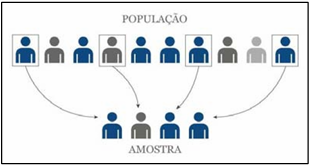
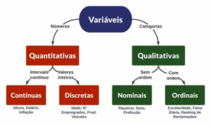

AULA 1: População, Amostra, Variável Quantitativa E Qualitativa
Estatística
É a ciência que oferece uma coleção de métodos para produzir e obter dados, organizá-los, resumi-los, analisá-los, interpretá-los e deles extrair conhecimento. Deste modo, a Estatística contribui para que dados gerem conhecimento e, como tal, deve ter como objetivo não só a produção de dados, como também a interpretação de dados já existentes, utilizando a combinação de gráficos, tabelas e medidas numéricas que permitam interpretar o que esses dados significam.
População
- Conjunto de elementos que possuem características em comum;
- Pode ser finita ou infinita;
- Pode ser composta por pessoas, objetos, eventos ou elementos.
Na estatística, a população é o conjunto de elementos que possuem características em comum, enquanto a amostra é um subconjunto da população.
Amostra
- Subconjunto da população que será estudado;
- Deve ser representativa da população;
- Pode ser probabilística ou não probabilística;
- Pode ser extraída por meio de técnicas de amostragem, como a casual simples, sistemática ou estratificada. A amostra é utilizada para analisar a população, permitindo obter resultados representativos sem precisar coletar dados de todos os indivíduos.
 Fonte: Educa Mais Brasil, 2025.
Variáveis qualitativas
São aquelas cujos valores podem ser separados em diferentes categorias que se distinguem por alguma característica não numérica. Por exemplo: sexo (masculino e feminino), cor dos cabelos (preto, loiro, ruivo, castanho, etc). Podem ser subdivididas em:
- Variáveis qualitativas ordinais: quando existe uma ordem nos seus valores. Por exemplo, a variável “Grau de instrução” pode ter seus valores ordenados (fundamental, médio, superior, etc). O mesmo não ocorre com a variável “cor da pele”.
- Variáveis qualitativas nominais: quando uma ordem não pode ser estabelecida entre seus valores.
Variáveis quantitativas
São aquelas cujos valores são expressos em números. As variáveis quantitativas se subdividem, ainda, em:
- Variáveis quantitativas discretas: quando resultam de um conjunto finito (ou enumerável) de valores possíveis. Por exemplo, o número de livros de Matemática da biblioteca da escola e a quantidade de carros presentes, agora, num estacionamento, são variáveis discretas.
 Fonte: Medium, 2025.
- Variáveis quantitativas contínuas: quando resultam de um número infinito de valores possíveis que podem ser associados a pontos em uma escala contínua, de modo que não haja lacunas ou interrupções. Por exemplo, o peso de um pacote de arroz e o comprimento de um parafuso constituem variáveis contínuas.
Censo
A palavra censo vem do latim census e quer dizer "conjunto dos dados estatísticos dos habitantes de uma cidade, província, estado, nação".
Amostragem
- Amostragem é o processo de selecionar uma parte de uma população para estudar e fazer inferências sobre o todo.
- A amostragem é importante porque permite economizar recursos e tempo, pois não é necessário pesquisar toda a população.
Existem dois tipos de amostragem:
- Amostragem probabilística: A seleção dos elementos da amostra é aleatória, ou seja, cada elemento da população tem a mesma chance de ser escolhido.
- Amostragem não-probabilística: A seleção dos elementos da amostra é feita de forma deliberada, com base em critérios definidos pelo pesquisador.
EXERCÍCIO:
Construir um diagrama (conjunto/subconjunto), para registrar exemplos de população, amostra e elemento.
CURIOSIDADES:
Biografia resumida de NeymarNome completo: Neymar da Silva Santos Júnior
Data de nascimento: 5 de fevereiro de 1992.
Local de nascimento: Mogi das Cruzes, São Paulo, Brasil.
Neymar é um dos jogadores de futebol mais conhecidos e talentosos do mundo. Desde jovem, mostrou grande habilidade com a bola e começou sua carreira nas categorias de base do Santos Futebol Clube, onde se destacou rapidamente.
Carreira
- Santos (2009-2013): Neymar começou sua carreira profissional no Santos, onde rapidamente se destacou como um dos melhores jovens talentos do Brasil. Ele ajudou o clube a conquistar a Copa do Brasil em 2010 e a Copa Libertadores em 2011.
- Barcelona (2013-2017): Em 2013, transferiu-se para o FC Barcelona, onde formou um trio lendário com Lionel Messi e Luis Suárez. Durante sua passagem pelo clube, ganhou diversos títulos, incluindo a UEFA Champions League em 2015.
- Paris Saint-Germain (2017-2024): Neymar se transferiu para o PSG em uma transferência recorde em 2017. Ele se tornou uma das estrelas mais brilhantes da equipe e conquistou vários títulos da Ligue 1. No entanto, em 2024, ele deixou o PSG após uma série de controvérsias e decisões pessoais.
- Retorno ao Santos (2025): Em uma reviravolta emocionante, Neymar retornou ao Santos em 2025, onde começou sua carreira. O retorno foi calorosamente recebido pelos torcedores e promete trazer nova energia ao clube.
Seleção Brasileira
Neymar tem sido um pilar na seleção brasileira desde sua estreia em 2010. Ele participou de várias Copas do Mundo e Copas América, sendo fundamental na conquista da medalha de ouro nos Jogos Olímpicos de 2016 no Rio de Janeiro. Em 2025, ele continua a ser uma figura chave na busca do Brasil por títulos internacionais.
Estilo de Jogo
Reconhecido por sua velocidade impressionante, dribles habilidosos e capacidade de finalização, Neymar é admirado por fãs e críticos. Seu estilo carismático dentro e fora do campo fez dele um ícone global.